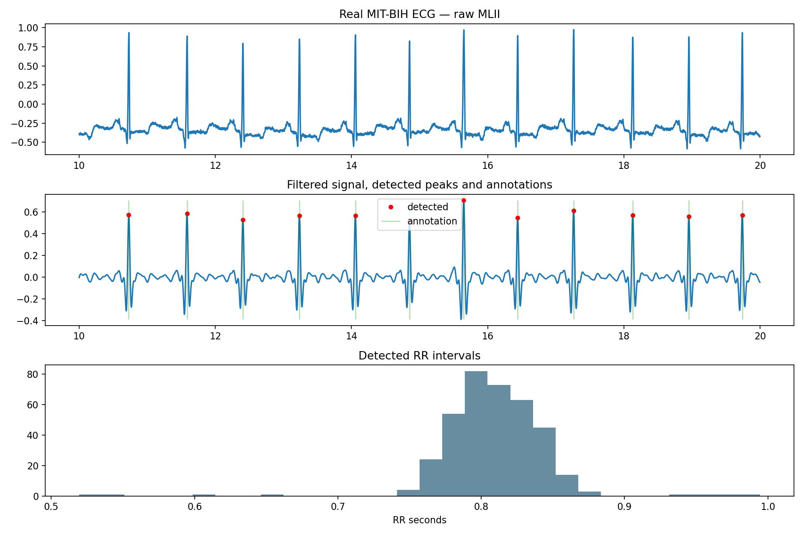
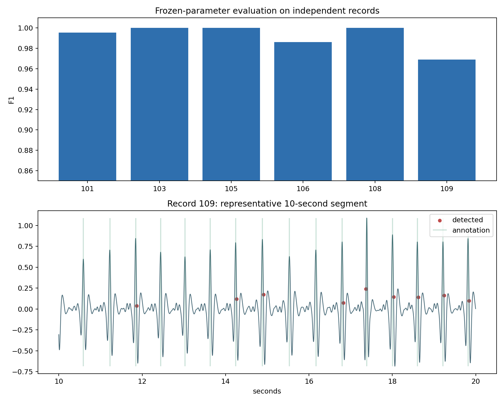

人体生理信号分析：ECG
人体生理信号以时间序列记录器官活动。ECG 把体表导联中的心脏电活动记录下来，R 峰、采样时间、滤波和人工标注共同构成一次可核对的信号分析。
1. 生理信号与时间序列
ECG 记录心脏电活动在体表导联方向上的综合变化；EEG 记录头皮电位差；EMG 记录肌肉电活动；PPG 通过光学方式记录血容量变化。它们都可以写成“时间点 × 通道”的数组，峰值和频段的解释取决于测量方式。
连续信号中的一个样本只对应某一时刻。记录对象除了数值数组，还包括采样率、通道名称、记录编号、传感器条件和人工标注；缺少这些字段，索引就无法可靠地转换成时间或事件。
生理信号同时包含目标活动、测量噪声、运动伪影和设备状态变化。峰值算法回答的是当前记录中检测到了哪些事件，疾病判断还需要患者背景、其他导联、独立验证和专业判断。
| 信号 | 主要测量方式 | 常见观察对象 |
|---|---|---|
| ECG | 体表电极与导联 | 波形、R 峰、RR 间期 |
| EEG | 头皮电极 | 节律、频段、事件变化 |
| EMG | 肌电电极 | 收缩区间、振幅、疲劳 |
| PPG | 光学传感器 | 脉搏波、血容量变化 |
2. ECG 导联与波形对象
一次心搏的典型形态包括 P 波、QRS 波群和 T 波。P 波与心房去极化相关，QRS 波群反映心室去极化，T 波与心室复极化相关；个体解剖、心率、噪声和滤波会改变它们的外观。
R 峰通常是 QRS 波群中较突出的局部峰，适合用作心搏时间标记。R 峰是一个定位点，不等于整段 QRS 的起止或全部形态；研究 ST 段、T 波或波群边界时需要额外规则和标注。
| 波形对象 | 常见含义 | 阅读重点 |
|---|---|---|
| P 波 | 心房电活动的可见变化 | 一个心搏由多个波段组成 |
| QRS 波群 | 心室去极化相关的快速变化 | R 峰是定位候选 |
| T 波 | 心室复极化相关波段 | 观察滤波是否改变形态 |
| RR 间期 | 相邻 R 峰的时间差 | 计算心率和节律变化 |

3. 采样率、时间轴与数据层级
采样率 360 Hz 表示每秒采集 360 个点。从零开始计数时，第 i 个样本的时间为 i / fs 秒；绘图需要使用与数组长度一致的时间轴，并确认标注索引的起点。
本地数据包含 MIT-BIH record 100 前 5 分钟的两个导联，信号数组为 [108000, 2]。原始标注表有 372 条事件，按心搏符号筛选后得到 371 个心搏标注；两者差异来自节律或其他非心搏事件。
| 对象 | 当前值 | 阅读含义 |
|---|---|---|
signal | [108000, 2] | 前 5 分钟的两个 ECG 导联 |
fs | 360 Hz | 每秒 360 个采样点 |
ann_sample | 372 条事件 | 筛选心搏后为 371 个 |
| 实践导联 | MLII | 本次 R 峰检测使用的导联 |
4. 噪声、质量与滤波
基线漂移常来自呼吸、电极接触和运动；工频干扰呈固定频率的周期变化；肌电噪声和运动伪影会带来快速或大幅度波动。先查看原始波形、幅度范围、缺失、饱和和异常片段，再决定处理方式。
本项目用 5—18 Hz、3 阶 Butterworth 带通滤波配合离线 R 峰检测。它有利于峰值定位，却可能削弱 P 波、T 波和 ST 段；原始信号需要与滤波信号并列保存。
零相位滤波可以减少相位延迟，但前后向计算和片段边界仍会产生边缘效应。正式记录应包含滤波器类型、阶数、截止频率、相位处理、截取顺序和被排除的异常片段。
| 质量问题 | 波形表现 | 处理与记录 |
|---|---|---|
| 基线漂移 | 整体缓慢上下移动 | 记录去趋势或高通方法，检查低频形态 |
| 工频干扰 | 固定频率的周期性细纹 | 确认电源频率和陷波设置 |
| 运动伪影 | 短时大幅度变化 | 标记时间段并分层评价 |
| 饱和或缺失 | 长段相同值或断裂 | 统计比例并保存排除原因 |
5. R 峰检测方法
透明的基线方法是在滤波波形上寻找局部最大值，再用幅度阈值和最小峰间距离去除小波动。find_peaks 的 distance 限制相邻候选峰的最小样本间隔，prominence 描述峰相对周围基线的突出程度。
Pan–Tompkins 类方法通过带通、微分、平方和移动窗口积分突出 QRS 能量；小波方法利用多时间尺度；深度学习方法从多记录标注中学习波形和上下文。数据量越小，越需要优先使用透明规则并检查错误片段。
候选峰检测和波形定位可以分成两步：先获得较高召回率的候选，再用时间、幅度、形态或节律规则筛选。降低阈值可能减少漏检，也可能增加噪声误检，需要同时看灵敏度、阳性预测值和时间误差。
| 方法路线 | 主要输入 | 优点 | 补充验证 |
|---|---|---|---|
| 局部峰与固定阈值 | 滤波波形、幅度、峰间距离 | 透明、容易定位错误 | 低幅度心搏和噪声记录 |
| Pan–Tompkins 类 | 滤波、微分、平方、积分 | 利用 QRS 能量 | 采样率、节律和参数变化 |
| 小波方法 | 多尺度系数与局部峰 | 兼顾时间和频率 | 小波基与跨数据库稳定性 |
| 深度学习方法 | 多记录波形与标注 | 学习上下文和复杂形态 | 患者级划分与独立测试 |
6. 标注匹配与评价指标
在尚未使用的检测峰中寻找容差内候选，并选择时间差最小者。成功配对为 TP，未匹配的人工标注为 FN，未匹配的检测峰为 FP；一对一规则可以避免一次检测被重复计数。
灵敏度为 TP / (TP + FN)，表示人工标注心搏中被找到的比例；阳性预测值为 TP / (TP + FP)，表示检测峰中与标注配对的比例。比较方法时还要报告时间误差、错误片段和逐记录结果。
本练习使用 0.1 秒容差；在 360 Hz 下约等于 36 个采样点。容差变大可能增加配对数，也会放宽定位误差，因此采样率、标注精度和任务目标要共同决定这个参数。
100, 200±10 点95, 205, 500| 对象 | 定义 | 阅读方式 |
|---|---|---|
| TP | 容差内成功配对 | 检测到的真实心搏 |
| FN | 没有检测峰匹配的标注 | 漏检，查看低幅度或噪声片段 |
| FP | 没有标注匹配的检测峰 | 误检，查看噪声或异常波形 |
| 时间误差 | 匹配峰与标注之间的采样点差 | 评价定位稳定性 |
7. RR 间期与下游分析
若 RR 间期为 0.8 秒，平均心率约为 60 / 0.8 = 75 次/分钟。计算前要标记或排除明显漏检、误检和不合理极端间期，并保存清理规则。
SDNN、RMSSD 和 pNN50 等指标对记录长度、伪影处理、节律类型和采样方式敏感。短时、单导联结果适合学习时间间隔的计算，解释时需要同时说明数据范围。
R 峰还可以作为心搏切片的时间基准，用于比较不同标注类型的波形。下游统计会继承上游峰序列的错误，因此先抽查峰位置和错误片段，再计算 RR 分布。
| 下游对象 | 计算基础 | 解释时需要注意 |
|---|---|---|
| 平均心率 | 60 / mean(RR) | 受漏检、误检和记录时长影响 |
| SDNN | RR 间期的标准差 | 明确记录长度和伪影处理 |
| RMSSD | 相邻 RR 差值的均方根 | 对异常峰和短时记录敏感 |
| 心搏切片 | 以 R 峰为中心截取窗口 | 窗口位置不等于完整波形标注 |
8. 验证设计与临床边界
随机打散窗口会让同一患者或同一采集运行的相似波形同时进入训练和测试，结果可能高估泛化。按 record、采集会话或患者划分，能更接近实际使用场景。
验证集用于选择滤波参数、峰间距离、prominence、阈值和后处理规则，测试集在方案固定后使用一次。报告应包含逐记录错误数量、时间偏差、不同心搏类型和噪声条件下的分层结果。
跨数据库验证可以检查设备、导联、采样率、标注规范和人群变化。R 峰检测可以支持心率、节律和心搏分类研究，不能单独承担心律失常诊断或临床安全性结论。
| 验证层级 | 划分单位 | 推荐报告 |
|---|---|---|
| 记录内检查 | 固定 record 的不同片段 | 峰数、匹配数、时间误差和错误片段 |
| 跨记录验证 | record 或采集会话 | 逐记录指标和总体汇总 |
| 跨患者验证 | 患者级留出 | 新患者泛化、节律分层和置信区间 |
| 外部验证 | 不同数据库或设备 | 导联、采样率、标注和噪声变化 |
9. MIT-BIH 跨记录结果
检测流程对选定导联进行 5—18 Hz 带通滤波，再计算 0.08 秒窗口内的短时能量。能量阈值由 record 100 的分位数确定，测试阶段不根据单条记录重新调参。
六条冻结测试记录共包含 2161 个标注心搏，检测匹配 2125 个，出现 2 个误检和 36 个漏检。总体 sensitivity 为 0.9833，positive predictive value 为 0.9991，F1 为 0.9911。

参数选择
| 评价集合 | 记录 | 结果 |
|---|---|---|
| 开发记录 | 100 | 选择能量分位数和最小峰间距 |
| 冻结测试 | 101、103、105、106、108、109 | sensitivity 0.9833；PPV 0.9991；F1 0.9911 |
| 测试错误 | TP 2125；FP 2；FN 36 | record 106 和 109 的漏检更多 |
10. 实践项目：人体生理信号分析：ECG
页面中的图像、流程图和示意结果用于阅读概念；代码运行和个人结果请在 Notebook 中完成。打开题目 Notebook 后复制到自己的账户，再按单元格填写和运行。
核对 7 条记录的导联、采样率、时长和人工标注数。
使用 5—18 Hz 带通滤波和 0.08 秒短时能量构造候选信号。
只在 record 100 选择能量分位数和最小峰间距。
固定参数后评价六条独立记录，保存 sensitivity、PPV、F1、TP、FP 和 FN。
查看最低 F1 记录的代表波形，说明漏检与结果边界。
先核对输入规模和参数冻结规则，再抽查峰位置、匹配结果和逐记录指标；个人结果与参考值不同，优先检查导联、标注筛选、滤波边界和容差。
资料来源与延伸阅读
下列资料用于核对数据对象、方法名称和研究背景。本页图像、指标与实践参考答案使用同一数据范围。
- PhysioNet MIT-BIH Arrhythmia Database：记录、采样率和人工标注来源。
- MIT-BIH Arrhythmia Database 论文：数据库和标注背景。
- SciPy find_peaks：局部峰、峰间距离和 prominence 参数说明。
- PhysioNet/CinC Challenge 2006：心电信号和心搏检测评价背景。
阅读论文或官方文档时，优先关注数据单位、评价对象和结果边界，再把相同概念放回当前项目的数据表和图像中。